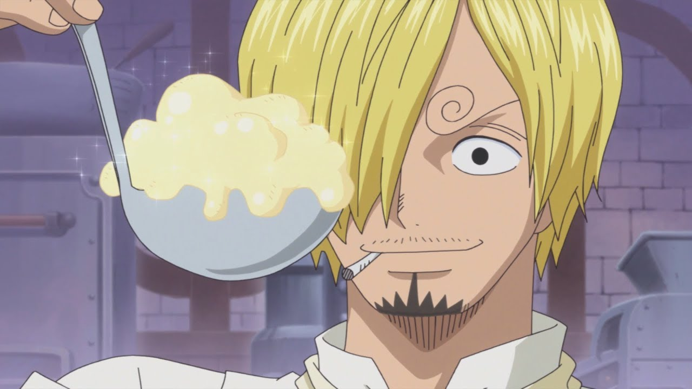

Vinsmoke Sanji - Cozinheiro
Conhecido como Perna Preta. Quarto a entrar no bando do Chapéu de Palha, e primeiro membro a não ser do East Blue, já que nasceu no North Blue.
Antigo chefe de cozinha do restaurante navio Baratie. É o príncipe do Reino de Germa, até oficialmente renunciar duas vezes.
Sua somente suas pernas em luta, dando-lhe um estilo único.
Seu sonho é encontrar o All Blue, onde todos os mares se encontram, juntamente com sua vida selvagem.
Sua recompensa atualmente é de  330.000.000
330.000.000